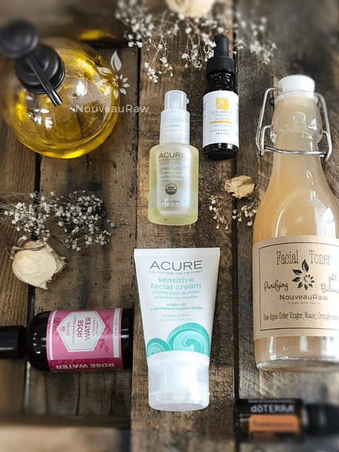

My Personal Skincare Regimen

I often get emails, comments on social media, or even people who are IRL (in real life), imagine that, asking what I use for my facial skincare.
I feel a bit embarrassed as if I am boasting, to share the next few sentences but I even hear comments from my family that I look younger today than I did in my 20’s. I don’t know if that is true, but I’m going to run with it.
I will say that back then my face suffered from breakouts, and the harshness of my life made itself evident on my face. Once I removed dairy from my diet and changed my lifestyle… my skin started to heal.
My younger sister always tells me that that I am Mrs. Benjamin Button looking younger as I age and I have a girlfriend who calls me her “porcelain doll.” And most people guess my age to be early to mid-thirties. I am currently forty-five years old.
Sharing all these comments is making me blush as I sit here… perhaps that’s a therapeutic thing… Is it causing blood to circulate?
When I hear such things, I shrug my shoulders, brush their comments aside, and change the subject to the weather or some such. Learning how to accept compliments is a challenge for me.
I am happy to say though that I am now absorbing such kind words and taking it to heart what they say. I am owning it! I guess it is only right that I do so. I am such an advocate for being mindful as to what goes in the body, whether it goes through my mouth or through my skin… why not the mind?! Believing in yourself, having confidence, and loving yourself does wonders for your skin, health, and emotional wellbeing. That’s my story, and I am sticking to it.
Walking in love, learning to express your emotions, aiming to live right where your feet are at that very moment, all contribute as well. And of course, what we put ON our skin is equally as important as what we put IN our bodies. I share all that because my skincare regimen is only part of what it takes to have beautiful, clear skin. Our skin tells us stories of what is happening within us; physically, emotionally, and spiritually.
As you scroll down through the items that I use daily, the posting may appear overwhelming at first glance. That is because I thought it was important to not only share with you WHAT I use but also WHY I use it and HOW I use it. So, sit back and let me take you on my morning and evening skincare regimen. I did include a summary at the end of the morning and evening skincare simplifying … “hey this is what I use” if you find the mumble-jumble boring. :) Blessings, amie sue
What I use:
Why I use it:
- Instead of using the standard bar of soap or some chemically laden, sudsy version of a facial cleanser, I wash my face with oil. Most facial cleansers are filled with harsh and unnatural chemicals and alcohol. This combination totally strips your face of all it’s natural oils, throwing your sebum production out of whack. What is Sebum? It is an oily substance secreted by the sebaceous glands that help prevent hair and skin from drying out. Without it, it can lead to clogged pores, blackheads, and blemishes.
- There are no harsh chemicals in my organic Jojoba oil. Nothing to strip my skin of its natural oils. Initially, it took about a week or two for my skin to balance itself, but since then my skin is left soft and radiant. I have been using this for at least five years.
- Cleansing with oil will melt away makeup, dirt, and grime while providing essential moisture.
- It doesn’t contain any questionable stuff such as fragrance, dyes, chemicals, parabens, alcohol, sulfates or GMOs.
How I use it:
- I wash my face first thing in the morning after brushing my teeth.
- I pump about a nickel to a quarter’s worth of oil into the palm of my hand and then apply gently all over my face and throat. (chickens have a neck, women have a throat haha) I massage the oil onto my face for about 1 minute, letting it sit on my face for 2 minutes or longer if I want a deeper cleanse. I don’t use any foundations or blushes, just mascara, and eyeliner.
- I then soak a washcloth in really warm water and apply the washcloth to my face, holding it there for 10 seconds. Then I slowly wipe off the oil.
 Toner:
Toner:
What I use:
Why I use it:
- Helps to regulate the pH balance of the skin.
- It’s an antibacterial and has anti-inflammatory properties.
- It is rich in Alpha Hydroxy acids which dissolve fatty deposits on the skin and dead skin cells which appear as little flakes or dry patches, revealing a fresher and healthier complexion once removed.
- Orange essential oil is an astringent and stimulates collagen production.
- From time to time, I switch up the different essential oils that I use. There are so many fantastic ones with therapeutic benefits both topically and aromatically.
- It’s inexpensive and easy to make right at home!
How I use it:
- Wet a cotton pad with toner and wipe my face and throat with it. Sometimes it tingles.
- Allow it to dry before applying moisturizer.
What I use:
Why I use it:
- ACURE Sensitive Facial Cream
- organic chamomile, rich probiotics help alleviate redness and inflammation while organic Argan oil provides superior moisture
- Feeds and restores cells, chlorella growth factor and Argan Stem cells provide cellular rejuvenation and collagen support
- Protects against free radical damage
- For dry/sensitive skin
- Vegan, gluten and cruelty-free, paraben, sulfate, silicone, phthalate, and synthetic fragrance-free.
- EWG rated 1
- Organic Vitamin E blend. Contains:
- Jojoba oil – naturally moisturizing as it mimics our natural skin oils.
- Avocado oil – smoothing and helps maintain a silky skin tone. High level of Vitamin E that prevents the skin from inflammations and itchiness thereby helping skin to maintain its health and softness.
- Rice bran oil – this oil is rich in vitamins, nutrients, and antioxidants. It is rich in Vitamin E and fatty acids; rice bran oil is able to deeply penetrate into skin’s layers, nourishing it from within, making your skin very soft and velvety, it improves skin’s elasticity, making it appear more youthful and plump.
- Lavender oil – restores skin complexion and reduces acne, slows aging with powerful antioxidants, and improves eczema and psoriasis. The health benefits of lavender oil for the skin can be attributed to its antiseptic and antifungal properties.
- Palma Rosa Oil – helps your body retain the moisture in the tissues and maintains the moisture balance throughout your body. Therefore, this can relieve inflammation and certain other symptoms of dehydration and is particularly good for the skin. It keeps the skin soft, moist, and looking young.
- Vitamin E oil (80% of this mixture is Vit. E) – provides the skin with necessary moisture as well as antioxidants for intense healing.
- Frankincense essential oil
- Powerful astringent that helps protect skin cells. It can be used to help reduce acne blemishes, the appearance of large pores, prevent wrinkles, and even helps lift and tighten skin to naturally slow signs of aging.
- Promotes the regeneration of healthy cells and also keeps the existing cells and tissues healthy.
- When inhaled, it induces a feeling of mental peace, relaxation, satisfaction, and spirituality. It also awakens insight, makes you more introspective, and lowers anxiety, anger, and stress. Great way to start and end the day. :)
How I use it:
- I place a small squirt of lotion in the palm of my hand and add 2 drops of Vitamin E oil, and 2 drops of Frankincense essential oil in the lotion.
- I rub my hands together and then rub the mixture completely over my face and throat… and across the tops and between my breasts. This is a sensitive skin area for a woman that also shows age. I make sure to cup my hands around my nose and inhale deeply.
Summary for morning skincare:
Organic Jojoba Oil, Organic ACT toner, ACURE Sensitive Facial Cream with Vit. E and Frankincense essential oil
What I use:
- Organic Jojoba Oil – (same as morning)
Toner:
What I use:
Why I use it:
- Just like many commercially made facial cleansers, most toners contain alcohol and other harmful chemicals that end up drying out your skin. And just as I mentioned above, this plays havoc with your own natural oil-producing glands. This starts a vicious cycle of over and underproduction of your skins beneficial oils, leaving your skin either too dry or too oily.
- This toner helps balance the pH of your skin, so you can naturally correct issues… naturally.
- One of the main benefits of rose water is that it acts as an anti-inflammatory, soothing irritated skin.
- It is a rich source of antioxidants, which can help strengthen skin cells and regenerate skin tissue.
- Safe for sensitive skin.
- Rose stimulates the circulation in the tiny blood vessels beneath the skin, helping to reduce the appearance of thread veins and broken capillaries.
- The aroma (!!) of roses is a powerful mood enhancer. It helps to calm the feelings of anxiety and promotes emotional well-being, thereby making you look relaxed.
- Another benefit for me personally when I use rose water is my great grandmother wore it daily, and it reminds me of her. That alone brings me a great sense of comfort and warms my heart.
Moisturizing:
What I use:
Why I use it:
- Vegan, gluten and cruelty-free, paraben, sulfate, silicone, phthalate, and synthetic fragrance-free.
- Contains (all organic):
- Safflower (high-oleic) oil – combines with the sebum in human skin to unclog the pores and reduce rashes, acne, and helps to the regeneration of new skin cells.
- Sesame seed oil – has an antioxidant known as sesamol that prevents the appearance of wrinkles and small pores in the skin helping in repairing of damaged cells and improving blood circulation.
- Pumpkin seed oil – the fatty acids found in this oil help to moisturize the skin and have Vit. C to help against skin damage.
- Borage oil – has strong anti-inflammatory effects.
- Argan oil – restores moisture to the skin’s lipid layer.
- Sweet orange oil – provides high levels of vitamin C that help protect and heal skin, helps in fighting signs of aging like wrinkles and dark spots since it promotes the production of collagen.
- Cranberry seed oil – works to neutralize free radicals for firmer, glowing skin.
- Bulgarian lavender oil – gives luster to the skin, and is good to balance the skin and soothe irritation.
- Olive oil – contains vitamin E, polyphenols, and phytosterols, won’t clog pores, and also prevents free radical damage to the skin.
- Rosemary oil – has antimicrobial and antiseptic qualities that make it beneficial in efforts to eliminate eczema, dermatitis, oily skin, and acne.
- Borage oil – soothes inflammation
- It absorbs quickly, leaving my face very soft but not greasy at all.
- EWG rated 1
How I use it:
- After cleansing with Jojoba oil, I gently apply two pumps worth over my entire face and throat.

Summary for evening skincare:
Organic Jojoba Oil, Organic Rose Water, ACURE Seriously Glowing Facial Serum
Disclaimer: As all of us have different skin types, please remember that skincare is not one size fits all. If you have extremely sensitive skin, do a patch test with any product you decide to try. And don’t forget to talk to your dermatologist or doctor if you have any concerns.
© AmieSue.com